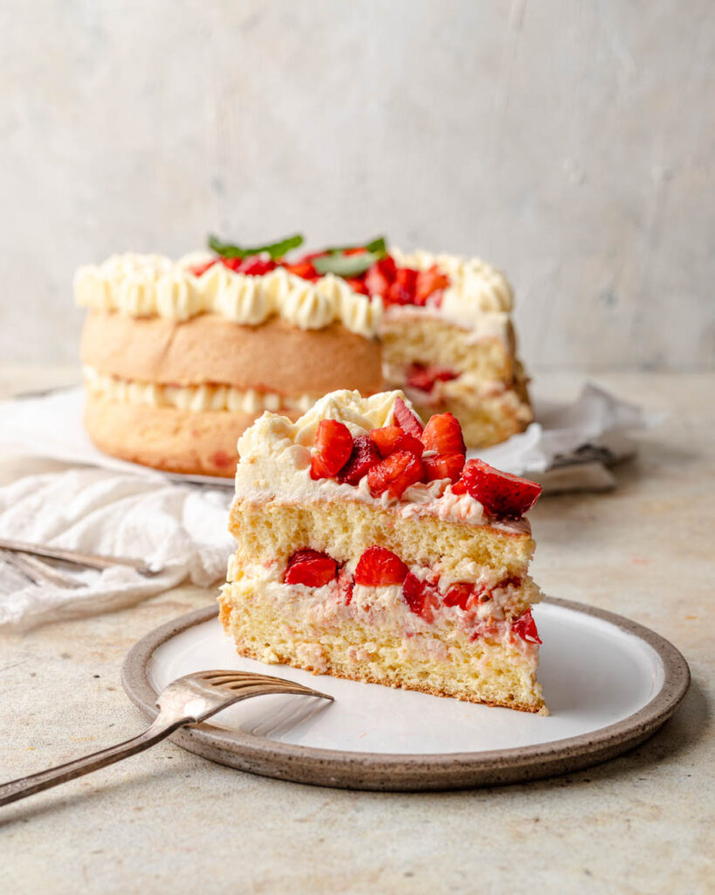

Strawberry Sponge Cake

A picture of a fresh strawberry sponge cake
Nothing tastes better than a fresh strawberry sponge cake with a cup
of tea on a quiet Sunday.
Ingredients
- 1 cup fresh strawberries
- 125g caster sugar
- 125g softened butter
- 125g plain flour
- 2 large eggs
- 1 tsp baking powder
- fresh cream
Steps
- Place all of the caster sugar, butter, flour, eggs and baking powder
into a bowl.
- Stir using an electric whisk on a low setting for two minutes.
- Pre-heat oven to gas mark 3.
- Line a cake tin with greaseproof paper.
- Place cake mixture into tin and stick in the oven for 20 minutes.
- Once the cake has baked, take out to cool down on a wire rack.
- When the cake has cooled down, spread the fresh cream and strawberries
on the top and serve.